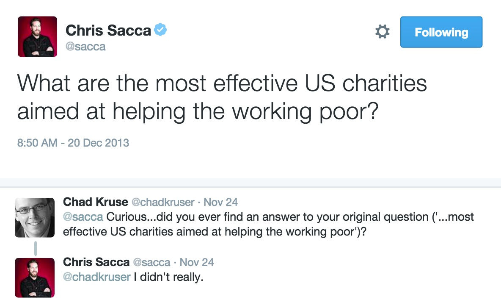

The Core Problem:
It's too hard to give your money away effectively
We started by talking to foundations, individuals, and other charitably-minded folks and quickly discovered that unless you had staff or access to philanthropy advisers, conducting effective philanthropy was time consuming and difficult.
